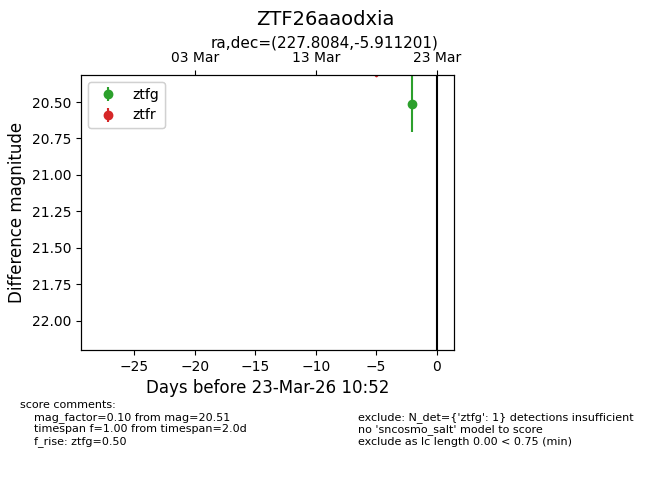
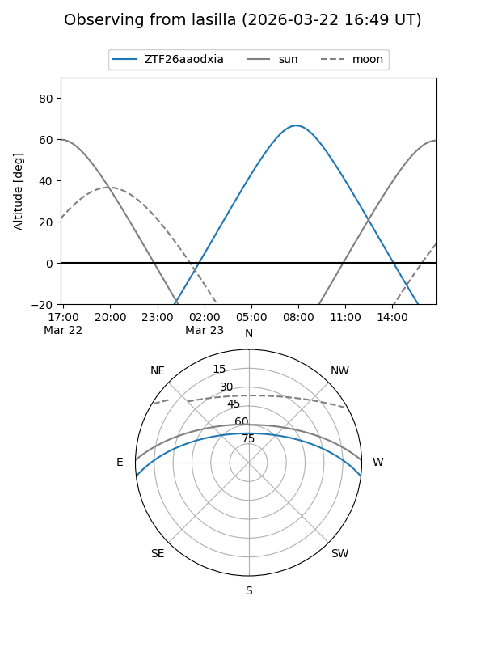
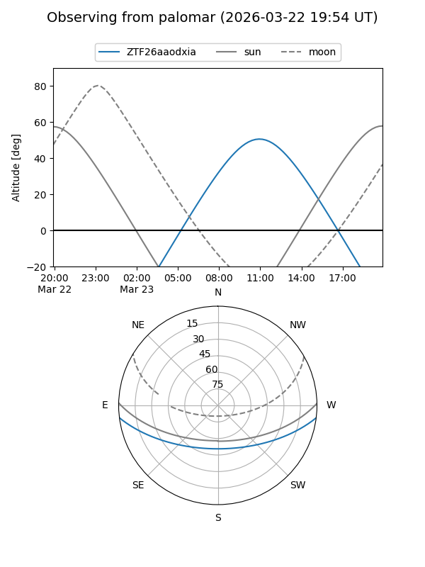

ZTF26aaodxia
Target ZTF26aaodxia at 2026-03-23 10:55
Aliases and brokers:
FINK: link
Lasair: link
ALeRCE: link
alt names
ZTF26aaodxia (ztf,fink_ztf)
Coordinates:
equatorial (ra, dec) = 227.8084,-5.91120
equatorial (HMS+DMS) = 15:11:14.01,-05:54:40.32
galactic (l, b) = (353.8102,+42.73833)
Flags:
Photometry:
last ztfg=20.51
1 ztfg detections
Lightcurve

Visibility


Additional plots